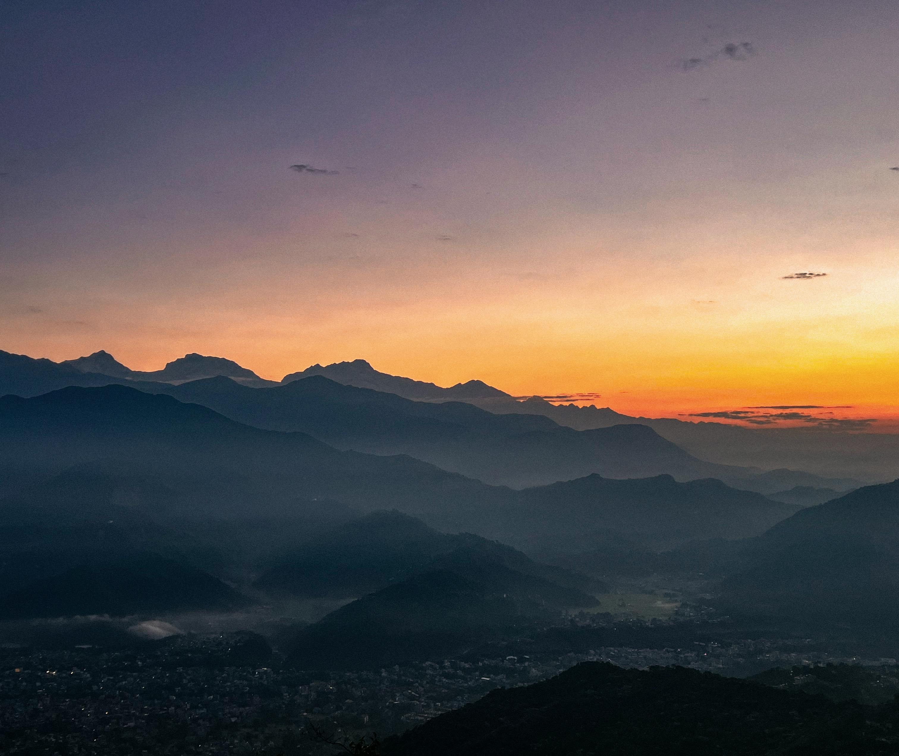
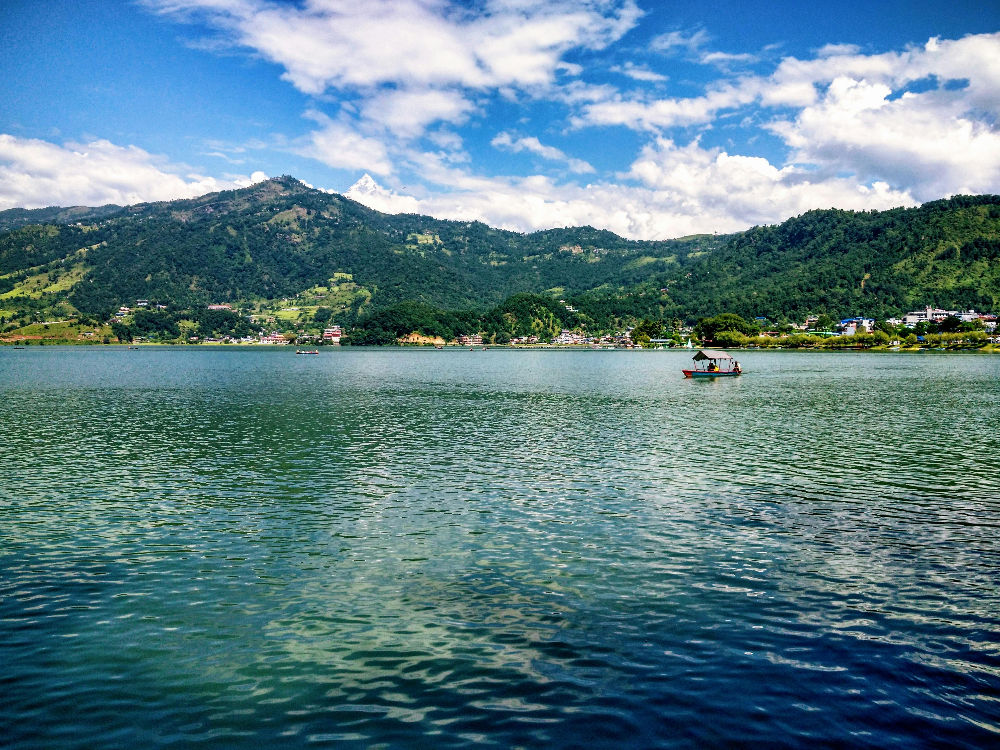
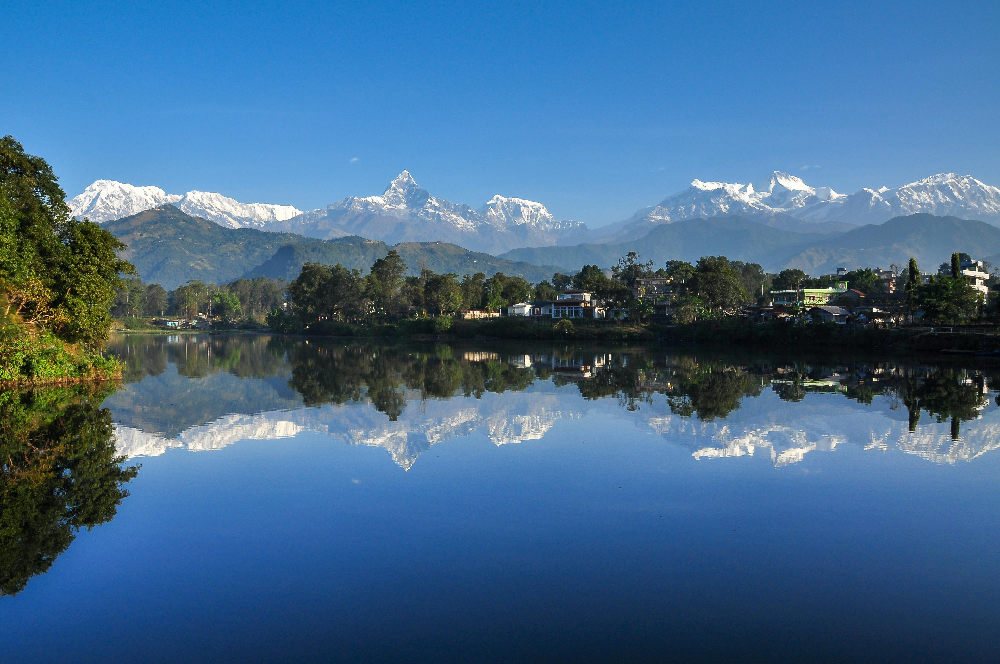

About Pokhara
.jpg)
Pokhara is one of the most beautiful and well-known cities in Nepal. It is famous for its peaceful environment, natural beauty, green hills, lakes, and stunning mountain views. Thousands of tourists from different countries visit Pokhara every year to enjoy its scenery and adventure activities. The city is also popular for boating, paragliding, hiking, sightseeing, and relaxing near the lakeside area. Because of its many beautiful lakes and attractive environment, Pokhara is proudly known as the “City of Lakes.” The city gives visitors a calm and refreshing feeling and is considered one of the tourism capitals of Nepal.
Location📍
Pokhara is located in Gandaki Province in the western part of Nepal. It is around 200 kilometers west of Kathmandu, the capital city of Nepal. The city is surrounded by green hills, rivers, caves, and beautiful Himalayan mountains. Pokhara also offers amazing views of famous mountains like Annapurna, Dhaulagiri, and Machhapuchhre. Due to its natural beauty and peaceful weather, many people choose Pokhara as their favorite travel destination in Nepal.
History
Pokhara has a long history and has been important for trade and tourism for many years. In the past, it was used as a trade route between Nepal and Tibet by local merchants. Over time, Pokhara slowly developed into one of the biggest tourist centers in Nepal. After roads, hotels, and transportation improved, more national and international tourists started visiting the city. Today, Pokhara is known all over the world for its natural beauty, tourism, and adventure sports.
Famous places in Pokhara
- Phewa Lake
- Devi's Fall
- World Peace Pagoda
- Sarangkot
- Begnas Lake

Phewa Lake is one of the most famous and beautiful places in Pokhara. It is the second-largest lake in Nepal and is popular for boating and sightseeing. Visitors can enjoy riding colorful boats while looking at the reflection of Mount Machhapuchhre in the clear water of the lake. There is also a small temple called Tal Barahi Temple located in the middle of the lake, which many people visit by boat. The lakeside area near Phewa Lake is full of hotels, restaurants, shops, and cafés, making it one of the busiest tourist areas in Pokhara.
Davis Falls is another popular tourist attraction in Pokhara. It is a unique and beautiful waterfall where the water disappears into an underground tunnel. The waterfall becomes even more powerful and attractive during the rainy season. Many tourists visit Davis Falls to enjoy the sound and view of the rushing water. There are also parks, small shops, and resting areas around the waterfall where visitors can spend time and take photos.

The World Peace Pagoda is a large white Buddhist stupa located on top of a hill in Pokhara. It is a symbol of peace, harmony, and unity. From the pagoda, visitors can see beautiful views of Phewa Lake, Pokhara city, and the Himalayan mountains. The place is peaceful and quiet, making it perfect for relaxation and meditation. Many tourists hike or drive to the World Peace Pagoda to enjoy the natural scenery and peaceful atmosphere.

Sarangkot is one of the best places in Nepal to watch the sunrise and mountain views. It is located on a hill near Pokhara and is famous for its breathtaking views of the Annapurna mountain range and Mount Machhapuchhre. Early in the morning, many tourists go to Sarangkot to see the golden sunrise shining over the snowy mountains. Sarangkot is also very famous for paragliding, and many adventure lovers visit the area to enjoy flying in the sky above Pokhara Valley.

Begnas is another beautiful lake located near Pokhara. It is quieter and less crowded than Phewa Lake, making it perfect for people who want peace and relaxation. The lake is surrounded by green forests, hills, and small villages, creating a very natural and refreshing environment. Visitors can enjoy boating, fishing, and spending peaceful time near the water. Begnas Lake is considered one of the hidden natural beauties of Pokhara.
Fun fact about Pokhara✨

A fun fact about Pokhara is that during clear weather, the reflection of Mount Machhapuchhre can be clearly seen in the water of Phewa Lake. This beautiful reflection makes the view look magical and attracts photographers and tourists from around the world. Pokhara is also one of the few places in the world where people can enjoy lakes, mountains, caves, waterfalls, and adventure sports all in one city.